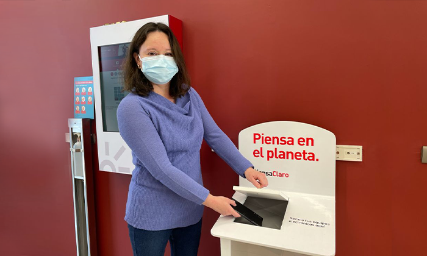
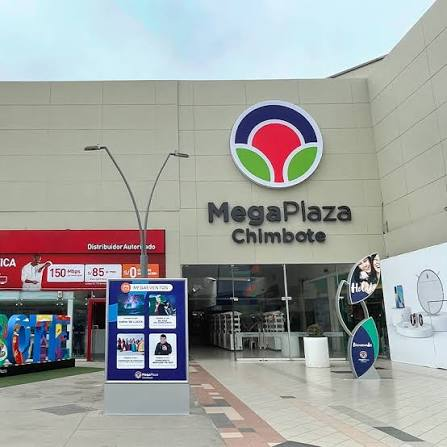
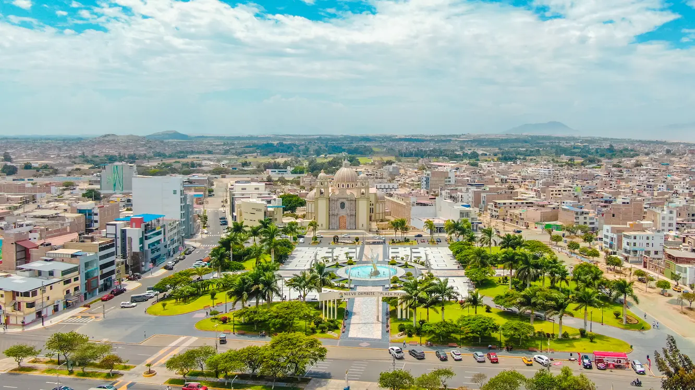

1
Punto de acopio RAEE Claro - Centro de Atención al Cliente
📌 Av. Panamericana N 100, Chimbote 02803
🗺️ Ver ubicación en Google Maps
En la ciudad de Chimbote, existen 3 puntos de acopio muy relevantes e importantes, los cuales son los siguientes:
📌 Av. Panamericana N 100, Chimbote 02803
🗺️ Ver ubicación en Google Maps
📌 Av. Víctor Raúl Haya de la Torre (Carretera Panamericana Norte), Villa María - Chimbote
🗺️ Ver ubicación en Google Maps
📌 Centro Cívico - Av. Pacífico s/n, Urb. Buenos Aires, Nuevo Chimbote
🗺️ Ver ubicación en Google Maps
🌱 ¿Qué esperas? Acércate a los puntos de acopio y deja tus residuos electrónicos